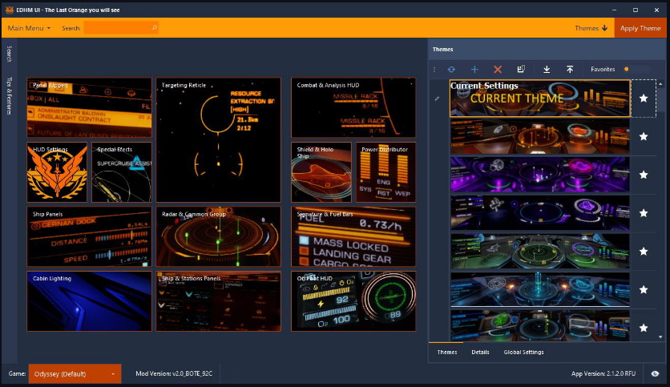
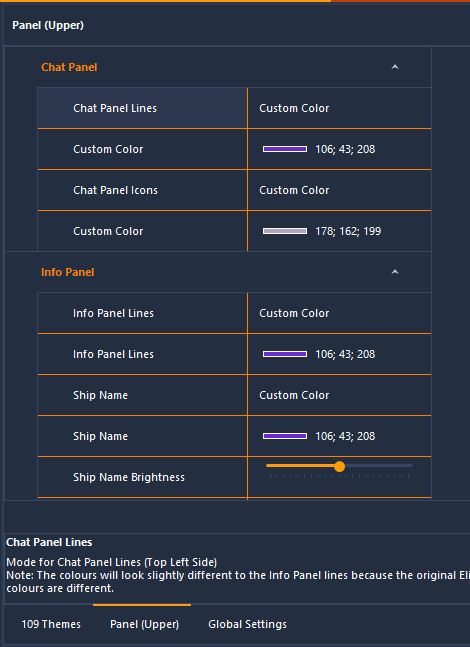
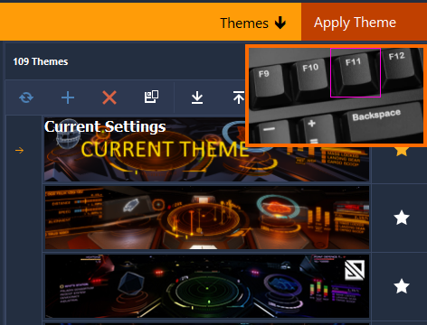
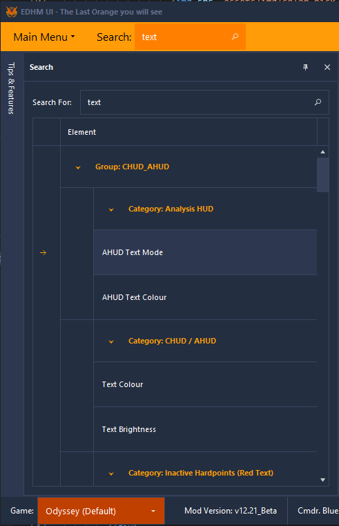
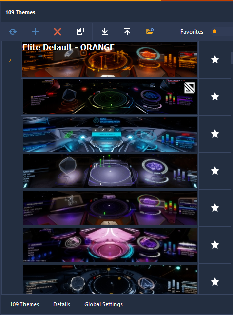
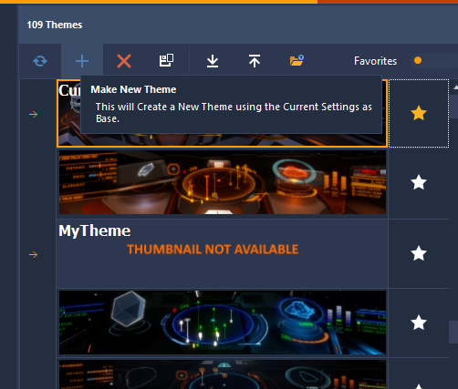
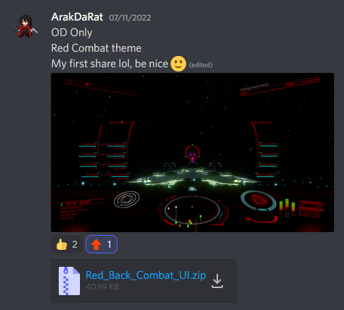

<!DOCTYPE html>
<html itemscope itemtype="https://schema.org/QAPage" class="html__responsive " lang="de">

<script async src='/cdn-cgi/bm/cv/669835187/api.js'></script><script>(function(){window['__CF$cv$params']={r:'72bb5834fbacbbc7',m:'pX8VgHsrL5IjPCDfu3AMwiuuTJMe1Q1V6AG4.PakyVo-1657980869-0-AZQLDgSC+r8ItCIuIoBDNoPT/lhzJQI0zaryVCR5KPRLwr/jggbxbk9JAUIEMk5vBFb+PErqIsfzPOvROH3d1d2MwUxJsLEVOaKTMRDgknXTwd2dSmemHj5c7IvcpnZNs8+fIuD5zZj1foVnsP56gbYOR0MWGXwPz3VETKNIjSQgN/pQ9hFxC0Ll9/jp3VJtGc8UGzJfW23SSQyzQ4k7U0A=',s:[0xec4f331adc,0x68c463c17c],}})();</script></html>

<head>
  <meta charset="utf-8">
  <meta content="width=device-width, initial-scale=1.0" name="viewport">

  <!-- Favicons -->
  <link href="./favicon.ico" rel="icon">
  <link href="./img/apple-touch-icon.png" rel="apple-touch-icon">

    <!-- SEO -->
    <title>EDHM-UI | Elite Dangerous Hud Mod</title>
    <meta name="description" content="Mod für Elite Dangerous, der die Anpassung fast aller Elemente des Schiffs-HUD ermöglicht.">
    <meta name="keywords" content="Elite Dangerous, hud, mod, edhm, colors" />
    
    <!-- og meta for facebook, googleplus -->
    <meta property="og:title" content="EDHM-UI | Elite Dangerous Hud Mod"/>
    <meta property="og:description" content="Mod für Elite Dangerous, der die Anpassung fast aller Elemente des Schiffs-HUD ermöglicht."/>
    <meta property="og:url" content="https://edhm-ui.herokuapp.com"/>
    <meta property="og:type" content="website" />
    <meta property="og:image" content="https://edhm-ui.herokuapp.com/img/about.jpg">
    <meta name="keywords" content="Elite Dangerous, hud, mod, edhm, colors" />

   <!-- twitter meta -->
   <meta name="twitter:card" content="summary_large_image"/>
   <meta name="twitter:title" content="EDHM-UI | Elite Dangerous Hud Mod"/>
   <meta name="twitter:description" content="Mod für Elite Dangerous, der die Anpassung fast aller Elemente des Schiffs-HUD ermöglicht."/>
   <meta name="twitter:url" content="https://edhm-ui.herokuapp.com"/>
   <meta name="twitter:image" content="https://edhm-ui.herokuapp.com/img/about.jpg"/>  

  <!-- Google Fonts -->
  <link
    href="https://fonts.googleapis.com/css?family=Open+Sans:300,300i,400,400i,600,600i,700,700i|Playfair+Display:ital,wght@0,400;0,500;0,600;0,700;1,400;1,500;1,600;1,700|Poppins:300,300i,400,400i,500,500i,600,600i,700,700i"
    rel="stylesheet">

  <!-- Vendor CSS Files -->
  <link href="assets/vendor/animate.css/animate.min.css" rel="stylesheet">
  <link href="assets/vendor/aos/aos.css" rel="stylesheet">
  <link href="assets/vendor/bootstrap/css/bootstrap.min.css" rel="stylesheet">
  <link href="assets/vendor/bootstrap-icons/bootstrap-icons.css" rel="stylesheet">
  <link href="assets/vendor/boxicons/css/boxicons.min.css" rel="stylesheet">
  <link href="assets/vendor/glightbox/css/glightbox.min.css" rel="stylesheet">
  <link href="assets/vendor/swiper/swiper-bundle.min.css" rel="stylesheet">

  <!-- Template Main CSS File -->
  <link href="assets/css/style.css" rel="stylesheet">

  <!-- Global site tag (gtag.js) - Google Analytics -->
  <script async src="https://www.googletagmanager.com/gtag/js?id=G-XTDN6FD8LF"></script>
  <script>
    window.dataLayer = window.dataLayer || [];
    function gtag() { dataLayer.push(arguments); }
    gtag('js', new Date());
    gtag('config', 'G-XTDN6FD8LF');
  </script>

  <!-- =======================================================
  * Template Name: Restaurantly - v3.7.0
  * Template URL: https://bootstrapmade.com/restaurantly-restaurant-template/
  * Author: BootstrapMade.com
  * License: https://bootstrapmade.com/license/
  ======================================================== -->
</head>

<body>
    <!-- ======= Top Bar ======= -->
    <div id="topbar" class="d-flex align-items-center fixed-top">
      <div class="container d-flex justify-content-center justify-content-md-between">
  
        <div class="contact-info d-flex align-items-center">
          <i class="bi bi-phone d-flex align-items-center"><span><a href="https://discord.gg/ZaRt6bCXvj"
                target="_blank">Tritt unserem Discord bei</a></span></i>
          <i class="bi bi-clock d-flex align-items-center ms-4"><span><a href="https://github.com/BlueMystical/EDHM_UI"
                target="_blank">Besuche GitHub</a></span></i>
        </div>
  
        <div class="languages d-none d-md-flex align-items-center">
          <ul>            
            <li><a href="./index.html">En</a></li>
            <li>De</li>
            <li><a href="./ru-idex.html">Ru</a></li>
          </ul>
        </div>
      </div>
    </div>

      <!-- ======= Header ======= -->
  <header id="header" class="fixed-top d-flex align-items-cente">
    <div class="container-fluid container-xl d-flex align-items-center justify-content-lg-between">

      <!-- <h1 class="logo me-auto me-lg-0"><a href="index.html">EDHM - UI</a></h1> -->
      <!-- Uncomment below if you prefer to use an image logo -->
      <a href="index.html" class="logo me-auto me-lg-0"> EDHM - UI</a>

      <nav id="navbar" class="navbar order-last order-lg-0">
        <ul>
            <li><a class="nav-link scrollto active" href="#hero">Startseite</a></li>
            <li><a class="nav-link scrollto" href="#about">Über</a></li>
            <li><a class="nav-link scrollto" href="#installing">Installation</a></li>
            <li><a class="nav-link scrollto" href="#themes">Designs</a></li>
            <li><a class="nav-link scrollto" href="#customization">Anpassung</a></li>
            <li><a class="nav-link scrollto" href="#creation">Kreation</a></li>
            <li><a class="nav-link scrollto" href="#support">Unterstützung</a></li>
          </ul>
          <i class="bi bi-list mobile-nav-toggle"></i>
        </nav><!-- .navbar -->
        <a href="https://github.com/BlueMystical/EDHM_UI/releases/latest/download/EDHM_UI_Setup.msi"
          class="book-a-table-btn scrollto d-none d-lg-flex">Herunterladen</a>

    </div>
  </header><!-- End Header -->

  <!-- ======= Hero Section ======= -->
  <section id="hero" class="d-flex align-items-center">
    <div class="container position-relative text-center text-lg-start" data-aos="zoom-in" data-aos-delay="100">
      <div class="row">
        <div class="col-lg-8">
          <h1>Willkommen bei <span>EDHM + Benutzeroberfläche</span></h1>
          <h2>Das letzte Orange, das du sehen wirst.</h2>

          <div class="btns">
            <a href="#about" class="btn-menu animated fadeInUp scrollto">Erfahre mehr</a>
            <a href="https://github.com/BlueMystical/EDHM_UI/releases/latest/download/EDHM_UI_Setup.msi"
              class="btn-book animated fadeInUp scrollto">Jetzt herunterladen</a>
            </div>
        </div>
        <div class="col-lg-4 d-flex align-items-center justify-content-center position-relative" data-aos="zoom-in"
          data-aos-delay="200">
          <a href="https://www.youtube.com/watch?v=7MqgLzI-8fA" data-width="1080px" data-height="auto"
            class="glightbox play-btn"></a>
        </div>

      </div>
    </div>
  </section><!-- End Hero -->

  <main id="main">

    <!-- ======= About Section ======= -->
    <section id="about" class="about">
        <div class="container" data-aos="fade-up">
  
          <div class="row">
            <div class="col-lg-6 order-1 order-lg-2" data-aos="zoom-in" data-aos-delay="100">
              <div class="about-img">
                
              </div>
            </div>
            <div class="col-lg-6 pt-4 pt-lg-0 order-2 order-lg-1 content">
          <h3>Elite Dangerous HUD Mod (EDHM)</h3>
          <p class="fst-italic">Ist eine Mod, erstellt von CMDR GeorjCostanza <a href="https://inara.cz/cmdr/169177/" target="_blank">@psychicEgg</a><br>
            EDHM ermöglicht präzise Farbänderungen an fast jedem Element auf dem HUD ohne die lästigen Nebenwirkungen der XML-Methode.<br>
            Die Mod ist eine Anwendung der Shader-Modding-Software 3Dmigoto und daher nur auf dem PC verfügbar.</p>
          <ul>
            <li><i class="bi bi-check-circle"></i> Ursprünglich veröffentlicht bei <a href="https://forums.frontier.co.uk/threads/elite-dangerous-hud-mod-edhm.557033/" target="_blank">FDev Foren.</a></li>
            <li><i class="bi bi-check-circle"></i> Und beim Autor <a href="https://github.com/psychicEgg/EDHM" target="_blank">GitHub-Seite</a></li>
            <li><i class="bi bi-check-circle"></i> hier ist <a href="https://github.com/bo3b/3Dmigoto/releases" target="_blank">3Dmigoto</a></li>
          </ul>
          <p>
            Es funktioniert auch, um die Kabinenbeleuchtung in eine beliebige Farbe oder sogar zweifarbig zu ändern, wenn Du dies bevorzugst. <br>
            Wir haben auch einige der Armaturenbrettleuchten, die direkt ins Gesicht scheinen, gedimmt, um die Ermüdung der Augen zu verringern.
          </p>
        </div>
      </div>

    </div>
  </section><!-- End About Section -->

    <!-- ======= About Section 2======= -->
    <section id="about2" class="about">
        <div class="container" data-aos="fade-up">
  
          <div class="row">
            <div class="col-lg-6 order-1 order-lg-2" data-aos="zoom-in" data-aos-delay="100">
              <div class="about-img">
                
              </div>
            </div>
            <div class="col-lg-6 pt-4 pt-lg-0 order-2 order-lg-1 content">
          <h3>EDHM - Benutzeroberfläche</h3>
          <p class="fst-italic">
            EDHM_UI ist die Benutzeroberfläche für EDHM, entwickelt von <a href="https://inara.cz/cmdr/262694/" target="_blank">@Blue Mystic</a>.<br><br>
            Um EDHM allein zu verwenden, müssen komplexe Konfigurationsdateien manuell bearbeitet werden.<br>
            Das ist für den durchschnittlichen Benutzer nicht geeignet, daher hatte 'Blue Mystic' mit Erlaubnis des Autors von EDHM ein Benutzeroberflächenprogramm für EDHM erstellt.<br>
          </p>
          <p>Zu den aktuellen Funktionen gehören:</p>
          <ul>
            <li><i class="bi bi-check-circle"></i> Ermöglicht dem Benutzer, alle Optionen über eine einfache grafische Oberfläche zu ändern.</li>
            <li><i class="bi bi-check-circle"></i> Mit der neuesten EDHM-Version gebündelt – EDHM muss nicht separat installiert werden.</li>
            <li><i class="bi bi-check-circle"></i> Gebündelt mit vielen vorgefertigten, von der Community bereitgestellten Designs.</li>
            <li><i class="bi bi-check-circle"></i> Voll kompatibel mit Horizons und Odyssey!</li>
            <li><i class="bi bi-check-circle"></i> Verfügbar als Open Source auf <a href="https://github.com/BlueMystical/EDHM_UI" target="_blank">GitHub</a></li>
          </ul>
        </div>
      </div>

    </div>
  </section><!-- Ende von Abschnitt 2 -->

    <!-- ======= Why Us Section ======= -->
    <section id="why-us" class="why-us">
        <div class="container" data-aos="fade-up">
  
          <div class="section-title">
        <h2>Warum wir</h2>
        <p>Warum unsere Mod wählen</p>
      </div>

      <div class="row">

        <div class="col-lg-4">
          <div class="box" data-aos="zoom-in" data-aos-delay="100">
            <span>01</span>
            <h4>Einfache Installation</h4>
            <p>EDHM-UI hat ein sehr einfach zu bedienendes Installationsprogramm.</p>
          </div>
        </div>

        <div class="col-lg-4 mt-4 mt-lg-0">
            <div class="box" data-aos="zoom-in" data-aos-delay="200">
            <span>02</span>
            <h4>Freiheit</h4>
            <p>Mit EDHM kann die Farbe fast aller HUD-Elemente angepasst werden.</p>
          </div>
        </div>

        <div class="col-lg-4 mt-4 mt-lg-0">
            <div class="box" data-aos="zoom-in" data-aos-delay="300">
            <span>03</span>
            <h4> Kein Orange mehr</h4>
            <p>Mit über einhundert benutzerdefinierten Farbdesigns ist kein Orange mehr zu sehen, es sei denn, Du möchtest es wirklich.</p>
          </div>
        </div>

      </div>

    </div>
</section><!-- End Why Us Section -->

<!-- ======= Installationsabschnitt ======= -->
<section id="installing" class="specials">
    <div class="container" data-aos="fade-up">

      <div class="Abschnittstitel">
        <h2>Anleitung</h2>
        <p>EDHM-UI installieren</p>
      </div>

      <div class="row" data-aos="fade-up" data-aos-delay="100">
        <!-- Menü auf der linken Seite -->
        <div class="col-lg-3">
          <ul class="nav nav-tabs flex-column">
            <li class="nav-item">
              <a class="nav-link active show" data-bs-toggle="tab" href="#tab-1">Herunterladen</a>
            </li>
            <li class="nav-item">
              <a class="nav-link" data-bs-toggle="tab" href="#tab-2">Setup-Programm ausführen</a>
            </li>
            <li class="nav-item">
              <a class="nav-link" data-bs-toggle="tab" href="#tab-3">Erster Start</a>
            </li>
            <li class="nav-item">
              <a class="nav-link" data-bs-toggle="tab" href="#tab-4">Unterstützung</a>
            </li>
          </ul>
        </div>
        <div class="col-lg-9 mt-4 mt-lg-0">
          <div class="tab-content">
            <div class="tab-pane active show" id="tab-1">
              <div class="row">
                <div class="col-lg-8 details order-2 order-lg-1">
                  <h3>Lade das EDHM-UI-Setup-Programm herunter</h3>
                  <p class="fst-italic">EDHM_UI wird mit der neuesten verfügbaren EDHM-Version geliefert (bedeutet, Du
                    musst NUR die Benutzeroberfläche herunterladen, um BEIDES zu haben). Dazu viele Farbdesigns, die von der Community erstellt wurden.</p>
                  <p>Du kannst das neueste Installationsprogramm für EDHM-UI herunterladen von:</p>
                  <ul>
                    <li><a href="https://github.com/BlueMystical/EDHM_UI/releases/latest" target="_blank"> Der GitHub Seite</a></li>
                    <li><a href="https://github.com/BlueMystical/EDHM_UI/releases/latest/download/EDHM_UI_Setup.msi" target="_blank">Dieser Direktlink</a></li>
                </ul>
            </div>
            <div class="col-lg-4 text-center order-1 order-lg-2">
              
            </div>
          </div>
        </div>
        <div class="tab-pane" id="tab-2">
            <div class="row">
              <div class="col-lg-8 details order-2 order-lg-1">
                <h3>Beende das Spiel, bevor Du mit der Installation beginnst</h3>
                <p class="fst-italic">Regel Nr. 1 zum Modden von Spielen:</p>
                <p>Schließe das Spiel, bevor Du Mods installierst oder aktualisierst.</p>
                <p>Das liegt daran, dass die Mod bestimmte Dateien berühren muss, die ausschließlich vom Spiel verwendet werden.</p>
                <p>Wenn das Spiel läuft, wird die Mod nicht richtig installiert, also... <b>Spiel schließen</b>.</p>
              </div>
              <div class="col-lg-4 text-center order-1 order-lg-2">
                
              </div>
            </div>
          </div>
          <div class="tab-pane" id="tab-3">
            <div class="row">
              <div class="col-lg-8 details order-2 order-lg-1">
                <h3>Erster Start</h3>
                <p class="fst-italic">Beim ersten Start der Benutzeroberfläche wird aufgefordert, den Pfad des Spielordners anzugeben.</p>
                <p>Du kannst die Pfade auf zwei Arten festlegen:</p>
                <ul>
                  <li> Manuell (für fortgeschrittene Benutzer) entweder durch Kopieren/Einfügen des vollständigen Pfads in das Textfeld oder Klicken auf die Schaltfläche [...], um die ausführbare Datei des Spiels zu finden.</li>
                  <li> Automatisch, durch klicken auf die grüne Schaltfläche „Assistent“ und den Anweisungen folgen.</li>
                </ul>
                <p>Es wird eine Menge Kopfschmerzen ersparen, wenn Du einfach auf den grünen Knopf klickst und tust, was es sagt.</p>
              </div>
              <div class="col-lg-4 text-center order-1 order-lg-2">
                
              </div>
            </div>
          </div>
          <div class="tab-pane" id="tab-4">
            <div class="row">
              <div class="col-lg-8 details order-2 order-lg-1">
                <h3>Support erhalten</h3>
                <p>EDHM hat eine großartige und freundliche Community, die Dir zusammen mit unseren Moderatoren und Administratoren bei der Lösung eventueller Probleme helfen wird.</p>
                <p>Wir laden Dich ein, <a href="https://discord.gg/ZaRt6bCXvj" target="_blank">unserem Discord beizutreten</a> und Teil der EDHM-Community zu werden.</p>
                <a href="https://discord.com/download" target="_blank"></a>

                </div>
                <div class="col-lg-4 text-center order-1 order-lg-2">
                  
                </div>
              </div>
            </div>
          </div>
        </div>
      </div>

    </div>
  </section><!-- End Specials Section -->

    <!-- ======= Themes Section ======= -->
    <section id="themes" class="customize">
        <div class="container" data-aos="fade-up">
  
          <div class="section-title">
        <h2>Anleitung</h2>
        <p>Farbthemen verwenden</p>
      </div>

      <div class="row" data-aos="fade-up" data-aos-delay="100">
        <!-- Menü auf der linken Seite -->
        <div class="col-lg-3">
          <ul class="nav nav-tabs flex-column">
            <li class="nav-item"><a class="nav-link active show" data-bs-toggle="tab" href="#theme-tab-1">Design auswählen</a></li>
            <li class="nav-item"><a class="nav-link" data-bs-toggle="tab" href="#theme-tab-2">Designs verwalten</a></li>
            <li class="nav-item"><a class="nav-link" data-bs-toggle="tab" href="#theme-tab-3">Vorschau eines Designs anzeigen</a></li>
        </ul>
    </div>
    <div class="col-lg-9 mt-4 mt-lg-0">
      <div class="tab-content">

        <div class="tab-pane active show" id="theme-tab-1">
          <div class="row">
            <div class="col-lg-8 details order-2 order-lg-1">
                  <h3>Wähle ein Thema aus</h3>
                  <p class="fst-italic">Am einfachsten beginnst Du mit der Auswahl eines der vielen benutzerdefinierten Farbdesigns, die von der EDHM-Community erstellt und geteilt wurden.</p>
                  <p>Gehe dazu wie folgt vor:</p>
                  <ul>
                    <li> Klicke auf ein beliebiges Thema in der Liste.</li>
                    <li> Klicke auf die Schaltfläche „Design anwenden“.</li>
                    <li> Alt + Tab zum Spiel und drücke die Taste F11.</li>
                  </ul>
                  <p><a href="#theme-tab-1">[F11]</a> ist ein von EDHM installierter Bindungsschlüssel, der verwendet wird, um alle vorgenommenen Änderungen zu aktualisieren.</p>
                  
                </div>
                <div class="col-lg-4 text-center order-1 order-lg-2">
                  
                </div>
              </div>
            </div>
            <div class="tab-pane" id="theme-tab-2">
              <div class="row">
                <div class="col-lg-8 details order-2 order-lg-1">
                  <h3>Designs verwalten</h3>
                  <p>EDMH enthält viele Themen, und vielleicht sind nicht alle nach Deinem Geschmack, das ist in Ordnung.</p>
                  <p>Du kannst jedes Thema als 'Favorit' festlegen und durch Umschalten einer Schaltfläche filtern, um nur Deine Favoriten anzuzeigen.</p>
                  <p>Du kannst auch Designs importieren und exportieren, aber bei jedem Update des UI-Programms wird jedes neu freigegebene Design enthalten sein, sodass Du nichts importieren musst.</p>
                  <p>Wir werden etwas später über das 'Exportieren' von Designs sprechen.</p>
                </div>
                <div class="col-lg-4 text-center order-1 order-lg-2">
                  
                </div>
              </div>
            </div>

            <div class="tab-pane" id="theme-tab-3">
                <div class="row">
                  <div class="col-lg-8 details order-2 order-lg-1">
                    <h3>Designvorschau</h3>
                    <p>Alle Themen haben ein 'Miniaturbild', das in der Themenliste angezeigt wird und Dir eine Vorstellung davon vermitteln soll, wie ein Thema aussieht.</p>
                    <p>Zusätzlich haben alle Themen ein 'Big Preview'-Bild, das Du sehen kannst durch:</p>
                    <ul>
                      <li> Klicke mit der rechten Maustaste auf ein beliebiges Thema in der Liste.</li>
                      <li> Klicke auf das Menü "Designvorschau".</li>
                      <li> Das Bild wird im Standard-Webbrowser angezeigt.</li>
                    </ul>
                </div>
                <div class="col-lg-4 text-center order-1 order-lg-2">
                  
                </div>
              </div>
            </div>
          </div>
        </div>
      </div>
    </div>
  </section><!-- End Themes Section -->

    <!-- ======= Customization Section ======= -->
    <section id="customization" class="specials">
        <div class="container" data-aos="fade-up">
  
          <div class="section-title">
        <h2>Anleitung</h2>
        <p>Passe die HUD-Elemente an</p>
      </div>

      <div class="row" data-aos="fade-up" data-aos-delay="100">
        <div class="col-lg-3">
          <ul class="nav nav-tabs flex-column">
            <li class="nav-item"><a class="nav-link active show" data-bs-toggle="tab" href="#cus-tab-1">Einführung</a></li>
            <li class="nav-item"><a class="nav-link" data-bs-toggle="tab" href="#cus-tab-2">Detailbereich</a></li>
            <li class="nav-item"><a class="nav-link" data-bs-toggle="tab" href="#cus-tab-3">Farbwähler</a></li>
            <li class="nav-item"><a class="nav-link" data-bs-toggle="tab" href="#cus-tab-5">Elemente suchen</a></li>
            <li class="nav-item"><a class="nav-link" data-bs-toggle="tab" href="#cus-tab-4">Änderungen übernehmen</a></li>
          </ul>
        </div>
        <div class="col-lg-9 mt-4 mt-lg-0">
            <div class="tab-content">
              <div class="tab-pane active show" id="cus-tab-1">
                <div class="row">
                  <div class="col-lg-8 details order-2 order-lg-1">
                  <h3>HUD-Elemente anpassen</h3>
                  <p class="fst-italic">Kennst Du die Mod schon?</p>
                  <p>Wenn ja, dann kannst Du Deine eigenen Änderungen an den Hud-Elementen des Spiels vornehmen.</p>
                  <p>Das UI-Programm gruppiert die vielen verschiedenen modifizierten Elemente in Kacheln, die auf der linken Seite des Fensters angezeigt werden.</p>
                  <p>Du kannst auf eine dieser Kacheln klicken und alle Einstellungen werden auf der rechten Seite, dem <a href="#cus-tab-2">Detailbereich</a>, angezeigt.</p>
                </div>
                <div class="col-lg-4 text-center order-1 order-lg-2">
                    
                  </div>
                </div>
              </div>
              <div class="tab-pane" id="cus-tab-2">
                <div class="row">
                  <div class="col-lg-8 details order-2 order-lg-1">
                  <h3>Detailbereich</h3>
                  <p>Es gibt verschiedene Arten von Einstellungen, die Du anpassen kannst, damit das Spiel genau so aussieht, wie Du es möchtest.</p>
                  <ul>
                    <li>Combo-Elemente: Du kannst eine von wenigen Optionen auswählen.</li>
                    <li>Farbelemente: Du kannst JEDE Farbe auswählen, die Du magst.</li>
                    <li>Schieberegler-Elemente: Wird verwendet, um die Helligkeit oder Transparenz vieler Elemente zu steuern.</li>
                  </ul>
                  <p>Klicke auf die linke Seite eines beliebigen Elements, um es auszuwählen, seine Beschreibung wird unten angezeigt.</p>
                  <p>Fahre mit der Maus über ein beliebiges Element, um seine Beschreibung anzuzeigen und manchmal eine Vorschau des Elements anzuzeigen.</p>
                  <p></p>
                </div>
                <div class="col-lg-4 text-center order-1 order-lg-2">
                    
                  </div>
                </div>
              </div>
              <div class="tab-pane" id="cus-tab-3">
                <div class="row">
                  <div class="col-lg-8 details order-2 order-lg-1">
                    <h3>Farbwähler</h3>
                    <p>Das UI-Programm verfügt über eine erweiterte Farbauswahl, mit der jede gewünschte Farbe ausgewählt werden kann.</p>
                    <p>Standardmäßig hat es zwei Farbpaletten:</p>
                    <ul>
                      <li> Personalisiert: Zeigt alle im aktuellen Design verwendeten Farben an.</li>
                      <li> Standard: Zeigt eine Reihe von Standardfarben zur Auswahl an.</li>
                    </ul>
                    <p>Klicke auf die Schaltfläche <a href="#cus-tab-3">Mehr Farben</a>, um die erweiterte RGB-Farbauswahl anzuzeigen.</p>
                  </div>
                  <div class="col-lg-4 text-center order-1 order-lg-2">
                    
                  </div>
                </div>
              </div>
              <div class="tab-pane" id="cus-tab-4">
                <div class="row">
                  <div class="col-lg-8 details order-2 order-lg-1">
                    <h3>Wende Deine Änderungen an</h3>
                    <p>Wenn Du Deine Änderungen im Spiel sehen möchtest, müssen sie zuerst angewendet werden.</p>
                    <p>Klicke auf die Schaltfläche <a href="#cus-tab-4">Design anwenden</a>, dann ALT+TAB zum Spiel und drücke die <a href="#cus-tab-4">F11</a>-Taste</p>
                    <p></p>
                    <p class="fst-italic">Es ist sehr wichtig, dass beim Vornehmen von Änderungen NICHT auf ein Thema in der Liste geklickt wird, nicht einmal auf das Thema, das Du gerade bearbeitest. Wenn Du dies tust, werden die gespeicherten Einstellungen des angeklickten
                      Designs geladen und alle nicht gespeicherten Änderungen gehen verloren.</p>
                    <p>Wenn Du die Änderungen anwendest, werden sie in den <a href="#cus-tab-4">Aktuellen Einstellungen</a> gespeichert,
                      und die aktuellen Einstellungen werden jedes Mal überschrieben, wenn Du ein Design anwendest.</p>
                  </div>
                  <div class="col-lg-4 text-center order-1 order-lg-2">
                    
                  </div>
                </div>
              </div>
              <div class="tab-pane" id="cus-tab-5">
                <div class="row">
                  <div class="col-lg-8 details order-2 order-lg-1">
                    <h3>Elemente suchen</h3>

                    <p>In der Hauptleiste siehst Du ein <a href="#cus-tab-5">Suchfeld</a>, mit dem Du nach beliebigen Elementen suchen kannst.</p>
                    <p>Die Suche akzeptiert Teilnamen, sodass jedes gewünschte Element leicht gefunden werden kann.</p>
                    <p>Du kannst auch nach Themennamen und Themenautoren suchen.</p>
                  </div>
                  <div class="col-lg-4 text-center order-1 order-lg-2">
                    
                  </div>
                </div>
              </div>
            </div>
          </div>
        </div>

      </div>
    </section><!-- End Specials Section -->

    <!-- ======= Creation Section ======= -->
    <section id="creation" class="customize">
        <div class="container" data-aos="fade-up">
  
          <div class="section-title">
            <h2>Anleitung</h2>
            <p>Erstelle Dein eigenes Design</p>
          </div>
  
          <div class="row" data-aos="fade-up" data-aos-delay="100">
            <div class="col-lg-3">
              <ul class="nav nav-tabs flex-column">
                <li class="nav-item"><a class="nav-link active show" data-bs-toggle="tab" href="#create-tab-1">Wähle ein Basisthema aus</a></li>
                <li class="nav-item"><a class="nav-link" data-bs-toggle="tab" href="#create-tab-2">Design speichern</a></li>
                <li class="nav-item"><a class="nav-link" data-bs-toggle="tab" href="#create-tab-3">Gib ihm ein Miniaturbild</a></li >
                <li class="nav-item"><a class="nav-link" data-bs-toggle="tab" href="#create-tab-4">Design exportieren</a></li>
              </ul>
            </div>
            <div class="col-lg-9 mt-4 mt-lg-0">
                <div class="tab-content">
                  <div class="tab-pane active show" id="create-tab-1">
                    <div class="row">
                      <div class="col-lg-8 details order-2 order-lg-1">
                      <h3>Wähle ein Basisthema aus</h3>
  
                      <p>Du kannst jedes Design als Basis für Dein eigenes verwenden, wähle es einfach in der Liste aus und beginne mit den Änderungen.</p>
                      <p>Es gibt zwei spezielle Themen, die Dir dabei helfen:</p>
                      <ul>
                        <li> Das <a href="#create-tab-1">Elite Default – ORANGE</a>-Theme, das, wie Du Dir vorstellen kannst, alle Einstellungen der Standardwerte hat, also das Äquivalent zu einem nicht modifizierten Spiel ist.</li>
                        <li> Beim Design <a href="#create-tab-1">@XML – Farbimport</a> sind alle Einstellungen auf die Verwendung von XML eingestellt. Verwende dies, wenn Du alte XML-Farbkonfigurationen importieren möchtest.</li>
                      </ul>
                      <p>Wähle ein Design aus und wende es an. Dann kannst Du auf die <a href="#cus-tab-4">Aktuellen Einstellungen</a> klicken, diese verwenden und Deine eigenen Änderungen vornehmen.</p>
                    </div>
                    <div class="col-lg-4 text-center order-1 order-lg-2">
                        
                      </div>
                    </div>
                  </div>
                  <div class="tab-pane" id="create-tab-2">
                    <div class="row">
                      <div class="col-lg-8 details order-2 order-lg-1">
                      <h3>Design speichern</h3>
  
                      <p>Es ist immer eine gute Idee, Deine aktuellen Einstellungen in ein Design umzuwandeln, um zu vermeiden, dass Deine Daten bei einem neuen FDev-Update verloren gehen. Sie löschen gerne von Zeit zu Zeit alles im Spielordner.
                        Designs werden im Ordner <a href="#create-tab-3">Eigene Dateien</a> gespeichert, wo niemand außer Dir sie berühren wird.</p>
  
                      <p>Wenn Du also Deine Einstellungen bereits so hast, wie Du es möchtest, ist es an der Zeit, sie als Design zu speichern. Klicke auf die Schaltfläche <a href="#create-tab-3">Neues Design erstellen</a>, gib ihm einen Namen und lege Deinen Autorennamen fest.</p>
  
                      <p class="fst-italic">ACHTUNG: Wenn Du den Namen eines bestehenden Designs verwendest, wird dieses Design überschrieben.</p>
                      <p>Dein kürzlich erstelltes Design ist das einzige in der Liste ohne Miniaturbild.</p>
                      </br>
                      <p></p>
                    </div>
                    <div class="col-lg-4 text-center order-1 order-lg-2">
                        
                      </div>
                    </div>
                  </div>
                  <div class="tab-pane" id="create-tab-3">
                    <div class="row">
                      <div class="col-lg-8 details order-2 order-lg-1">
                      <h3>Tool zum Erstellen von Miniaturansichten</h3>
  
                      <p>Klicke mit der rechten Maustaste auf Dein Design und wähle <a href="#create-tab-1">Miniaturansicht erstellen</a>. Ein neues Fenster wird angezeigt.</p>
                      <ul>
                        <li>Kopiere einen Screenshot des Spiels</li>
                        <li>Füge den Screenshot in das <a href="#create-tab-1">Thumbnail Maker Tool</a>.</li>
                        <li>Ändere die Größe des Fensters zum Vergrößern/Verkleinern</li>
                        <li>Bewege den rechteckigen Delimitador so, dass er Dein HUD am besten abdeckt.</li>
                        <li>Klicke auf die Schaltfläche <a href="#create-tab-1">Verarbeiten und speichern</a>.</li>
                      </ul>
                      <p>Das Bild wird <a href="#create-tab-1">PREVIEW.jpg</a> heißen, <b>Du kannst diesen Namen NICHT ändern</b>.</p>
                      <p>Das Bild wird in dem Ordner gespeichert, in dem sich Dein Design befindet.</p>
                    </div>
                    <div class="col-lg-4 text-center order-1 order-lg-2">
                        
                      </div>
                    </div>
                  </div>
                  <div class="tab-pane" id="create-tab-4">
                    <div class="row">
                      <div class="col-lg-8 details order-2 order-lg-1">
                    <h3>Design exportieren</h3>

                    <p>Du kannst jedes ausgewählte Design exportieren, um es entweder zu sichern oder mit der Community zu teilen.</p>
                    <ul>
                      <li>Wähle das Thema in der Liste aus.</li>
                      <li>Klicke auf die Schaltfläche <a href="#create-tab-1">Design exportieren</a></li>
                    </ul>
                    <p>Du wirst gefragt, wo Du es speichern möchtest, und es wird eine ZIP-Datei erstellt, die Dein exportiertes Design enthält.</p>
                    <p>Wenn Du es teilen möchtest, poste es auf unserem <a href="https://discord.gg/ZaRt6bCXvj">Discord Server</a> im #Sharing-Colors Channel.</p>
                    <p>Du kannst dort die ZIP-Datei und einen Screenshot Deiner Farben in voller Größe hochladen.</p>
                  </div>
                  <div class="col-lg-4 text-center order-1 order-lg-2">
                    
                  </div>
                </div>
              </div>
            </div>
          </div>
        </div>

      </div>
    </section><!-- End Creation Section -->

    <!-- ======= Support Section ======= -->
    <section id="support" class="testimonials section-bg">
        <div class="container" data-aos="fade-up">
  
          <div class="section-title">
            <h2>Wie bekommst Du</h2>
            <p>Unterstützung</p>
          </div>
 
          <div class="" data-aos="fade-up" data-aos-delay="100">
            <p>EDHM hat eine großartige und freundliche Community, die zusammen mit unseren Moderatoren und Administratoren
              die Dir bei der Lösung eventueller Probleme hilft.</p>
            <p>Wir laden Dich ein, <a href="https://discord.gg/ZaRt6bCXvj" target="_blank">unserem Discord beizutreten</a> und Teil der EDHM-Community sein.</p>
              <a href="https://discord.com/download" target="_blank"></a>
          </div>
  
        </div>
      </section><!-- End Testimonials Section -->
  
  
    </main><!-- End #main -->

      <!-- ======= Footer ======= -->
  <footer id="footer">
    <div class="footer-top">
      <div class="container">
        <div class="row">

        </div>
      </div>
    </div>

    <div class="container">
      <div class="copyright">
        &copy; Copyright <strong><span>Restaurantly</span></strong>. All Rights Reserved
      </div>
      <div class="credits">
        <!-- All the links in the footer should remain intact. -->
        <!-- You can delete the links only if you purchased the pro version. -->
        <!-- Licensing information: https://bootstrapmade.com/license/ -->
        <!-- Purchase the pro version with working PHP/AJAX contact form: https://bootstrapmade.com/restaurantly-restaurant-template/ -->
        Designed by <a href="https://bootstrapmade.com/">BootstrapMade</a>
      </div>
    </div>
  </footer><!-- End Footer -->

  <div id="preloader"></div>
  <a href="#" class="back-to-top d-flex align-items-center justify-content-center"><i
      class="bi bi-arrow-up-short"></i></a>

  <!-- Vendor JS Files -->
  <script src="assets/vendor/aos/aos.js"></script>
  <script src="assets/vendor/bootstrap/js/bootstrap.bundle.min.js"></script>
  <script src="assets/vendor/glightbox/js/glightbox.min.js"></script>
  <script src="assets/vendor/isotope-layout/isotope.pkgd.min.js"></script>
  <script src="assets/vendor/swiper/swiper-bundle.min.js"></script>
  <script src="assets/vendor/php-email-form/validate.js"></script>

  <!-- Template Main JS File -->
  <script src="assets/js/main.js"></script>

</body>

</html>